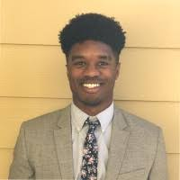

Fun Facts
I am an eager, optimistic, 28 year old father. I have traveled to about 12 or 13 different states.
I've be to music festivals from EDC Las Vegas to the Hangout Festival in Gulf Shore. I play the
Ukalele (not well), and skateboard in my free time. The reason I am looking for something new in my
career is to mainly be able to provide for my family, with security and stability for our future.
Why?
I start my journey in web developement completely blind. My focus is to be apart of a team that can
focus on a mission statement I can believe in. I would like to be apart of a company that is
steadily growing, and would push career goals in the right direction.
About Me
I am from Raleigh, NC, I have currently lived in Charlotte for about 8 years. I fell in love with
the city and people. I attended East Carolina University for 2 years, I was also "on" the football
team there. Once I left ECU, I transferred to Uncc, where I studied Sociology and Philosophy. After
working in sales for about 4 year, I am now looking to broaden my knowledge by applying the UNCC
Full Stack Bootcamp to my future career.